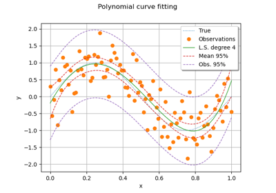
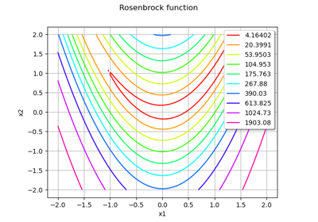

Numerical methods¶
General methods¶


Compute leave-one-out error of a polynomial chaos expansion
Compute leave-one-out error of a polynomial chaos expansion

Compute confidence intervals of a regression model from data
Compute confidence intervals of a regression model from data

Compute confidence intervals of a univariate noisy function
Compute confidence intervals of a univariate noisy function
Optimization¶



Quick start guide to optimization
Quick start guide to optimization


Iterative statistics¶
Estimate moments iteratively
Estimate extrema iteratively
Estimate threshold exceedance iteratively
Estimate threshold exceedance iteratively